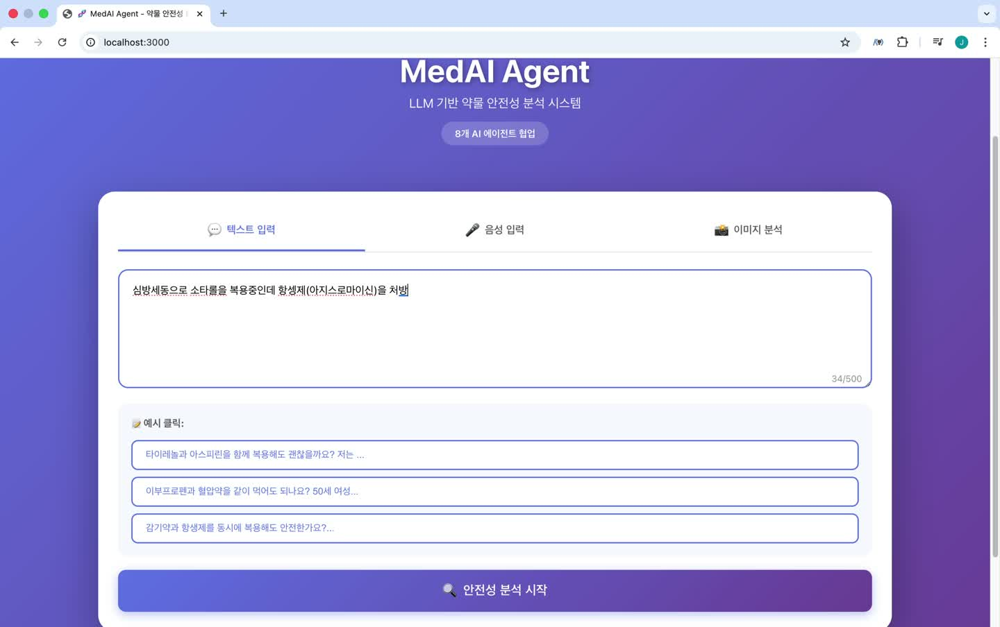
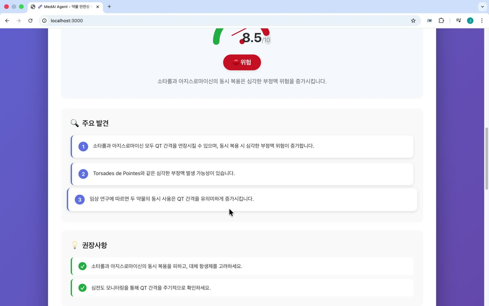

MedAI Agent
텍스트·음성·이미지 입력에서 약물 정보 조회와 8단계 LLM 처리를 거쳐 보고서를 보여주는 프로토타입을 구현했습니다.
프로젝트 한눈에 보기
약물 정보 분석 프로토타입
- 직접 담당
- 입력·약물 조회·에이전트 흐름·결과 화면 연결
- 구성
- 8단계 LLM 워크플로우
- 현재 단계
- 약물 정보 분석 프로토타입
- 사용 기술
- PythonFastAPIGPT-4oReactVite
프로젝트 소개
자유로운 입력을, 이어서 처리할 수 있는 정보로 바꾸기.

텍스트·음성·이미지로 들어온 약물 정보를 같은 흐름에서 처리하고, 사용자가 읽을 수 있는 보고서로 전달하는 프로토타입입니다. 저는 입력 화면, 약물 정보 API, 역할을 나눈 LLM 처리와 결과 UI를 연결했습니다.
핵심 난제 · 입력부터 보고서까지 연결
서로 다른 입력과 여러 처리 단계를 하나의 서비스 흐름으로 만들려면?
- 무엇이 어려웠나
- 텍스트·음성·이미지 입력에서 약물 정보를 파악하고, 조회·생성을 거쳐 사용자가 읽을 수 있는 결과까지 연결해야 했습니다. 앞 단계의 약물명과 해석이 뒤 단계의 입력이 되므로 정보가 전달되는 경계를 명확히 해야 했습니다.
- 왜 이 방법을 선택했나
- 역할별 처리 단계를 나누고 앞 단계의 출력을 다음 단계에 전달했습니다. 화면에서는 진행 상태와 최종 요약·상세 결과를 분리해 이 흐름을 확인할 수 있게 했습니다.
해결 과정
입력 이해·약물 인식·기본 지식·심화 분석·부작용 검토·근거 설명·개인화 정보·보고서 생성의 8단계를 구성했습니다. 앞 단계의 출력을 다음 단계에 전달하고, FastAPI 응답을 React의 요약과 상세 화면으로 연결했습니다.
여덟 단계는 역할을 나눈 LLM 호출이며 독립된 의료 전문가의 검증은 아닙니다. 식약처 e약은요 API에서 조회한 사실과 모델이 생성한 설명을 구분해 해석해야 합니다.
입력부터 조회·생성·보고서 표시까지 연결한 프로토타입과 시연을 확보했습니다. 위험도·권장사항의 의료적 정확도는 검증하지 않았습니다.
여러 호출의 결과를, 읽을 수 있는 하나의 화면으로.

처리 중에는 진행 상태를 보여주고, 최종 결과는 요약·주요 내용·주의사항과 상세 설명으로 나눴습니다. 생성된 내용을 그대로 길게 나열하기보다 사용자가 현재 단계와 결과를 구분해 볼 수 있도록 구성했습니다.
결과와 배운 점
연결한 단계 수보다, 정보가 어떻게 전달되는지가 중요했습니다.
약물명이나 앞 단계의 해석이 후속 설명의 입력이 되는 구조를 만들며, 오류가 어디에서 생겼는지 확인할 수 있어야 한다는 점을 배웠습니다. 현재 성과는 실행 가능한 연결과 UI이며, 단계별 제거 실험이나 의료적 정확도 검증까지 완료한 프로젝트는 아닙니다.
다음 검증에서는 조회한 사실과 생성한 설명을 추적하고, 특정 단계를 제거했을 때 품질과 지연이 어떻게 달라지는지 확인하려 합니다. 이 계획을 이미 입증한 품질 개선 성과와 구분합니다.
코드와 근거
구현과 판단의 근거를 함께 남깁니다.
Python / FastAPI / GPT-4o / React / Vite
2026.11.03 검토 · 개인 기여와 팀 성과, 완료한 실험과 진행 중인 연구를 구분했습니다.